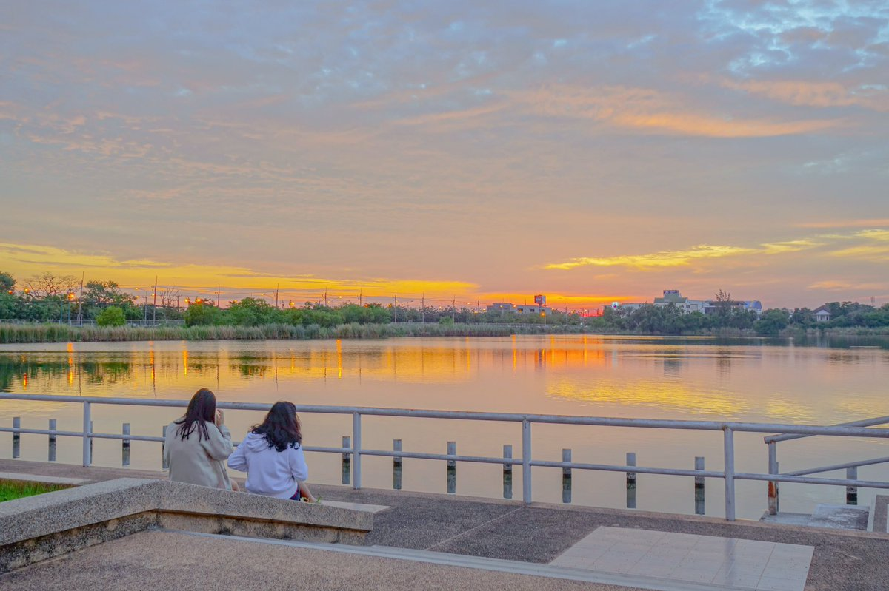
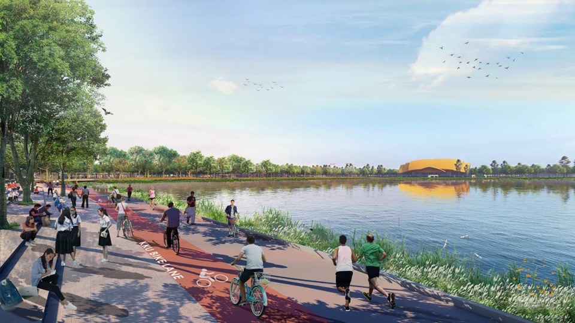

บึงสีฐาน
บึงสีฐานเป็นแหล่งพักผ่อนและสถานที่ท่องเที่ยวยอดนิยมภายในมหาวิทยาลัยขอนแก่น ที่รายล้อมไปด้วยบรรยากาศธรรมชาติอันร่มรื่น เหมาะสำหรับการออกกำลังกาย เช่น การเดิน วิ่ง หรือปั่นจักรยาน รวมถึงเป็นพื้นที่สำหรับการพักผ่อนหย่อนใจ ของนักศึกษา บุคลากร และประชาชนทั่วไป นอกจากนี้ยังเป็นจุดชมวิวพระอาทิตย์ตก ที่สวยงามและได้รับความนิยมอย่างมาก โดยเฉพาะในช่วงเย็น ทำให้บึงสีฐานเป็นสถานที่ที่สะท้อนความสมดุลระหว่างการเรียนรู้และการใช้ชีวิต ภายในรั้วมหาวิทยาลัยขอนแก่นได้อย่างลงตัว

